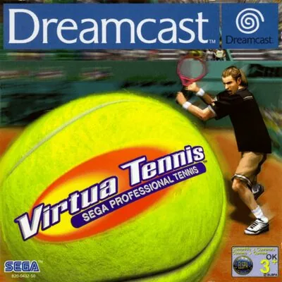

Dreamcast
Virtua Tennis
- Año: 2000
- Desarrollador: Hitmaker
- Género: Deportes / Tenis
- Jugadores: 4 jugadores
Imagina lo que siente un tenista al salir a la pista: el público anima, el ambiente es eléctrico y la adrenalina se dispara. Con Virtua Tennis puedes vivirlo. Juega con uno de los ocho tenistas y descubre los jugadores secretos. Además del modo arcade, tienes el modo exhibición, con dobles para 4 jugadores.
Cuando domines estos modos, enfréntate al mundo en el circuito mundial, con entrenamientos únicos, desafíos y tiendas donde comprar ropa, raquetas, pistas y compañeros de dobles.
Controles
que el tenista se mueva con el joystick (palanca analógica). Según las guías: B golpea, A o Y hacen un globo, X cambia la cámara (solo a un jugador) y L o R cambian la táctica del compañero en dobles. Que el J2 entre con 2P. ¿Va fluido?
Mando de Dreamcast: los botones son los mismos en todos los juegos (reicast no los cambia por juego). Los colores son los del mando original.
| Panel | Juego |
|---|---|
 | Mover (palanca analógica) |
 |  A A |
 |  B B |
 | Gatillo derecho |
 |  X X |
 |  Y Y |
 | Gatillo izquierdo |
 | Start |
 | Salir del juego |
El panel en Dreamcast


Argumento
Recopilado de internet (2026-11-05). Lo marcado con ⚠️ no está probado en la bartop.
Virtua Tennis no tiene historia: es un juego de tenis con jugadores reales de 1999-2000. En Japón se llamó Power Smash.
Tenistas: Jim Courier, Cédric Pioline, Tim Henman, Tommy Haas, Mark Philippoussis (solo en la recreativa y en Dreamcast), Carlos Moyá, Thomas Johansson y Yevgeny Kafelnikov. La versión de Dreamcast pasa de ocho a dieciséis tenistas; los demás son secretos.
Fuentes
Jugabilidad
Recopilado de internet (2026-11-05). Lo marcado con ⚠️ no está probado en la bartop.
- Arcade: hay que ganar cinco partidos en pistas distintas para ganar el torneo. Si juegas bien, al final te reta Master, uno de los jefes.
- Exhibición: un partido suelto con todo configurable: individual o dobles, hasta cuatro jugadores (dos en individual), de un juego a un set, pista y nivel del rival.
- Circuito mundial (World Circuit): el modo principal de Dreamcast. Se empieza en el puesto 300 del ranking y se sube ganando partidos; las pruebas de entrenamiento (minijuegos, con tres niveles) mejoran al tenista y desbloquean partidos y ropa.
- En la bartop solo hay dos paneles: los dobles de cuatro personas no se pueden jugar.
Botones según las guías (⚠️ por confirmar)
| Mando de Dreamcast | Panel | Acción |
|---|---|---|
| Palanca o cruceta | | Mover al tenista · dirigir la bola |
| A | | Golpear · aceptar en los menús |
| B | | Globo · volver en los menús |
| X | | Globo |
| Y | | Cambiar la cámara (solo a un jugador) |
| Gatillos L y R | | Cambiar la táctica del compañero en dobles |
| Start | | Pausar · entrar como retador |
Guía de niveles
Recopilado de internet (2026-11-05). Lo marcado con ⚠️ no está probado en la bartop.
- Torneos del modo arcade (según la Wikipedia, en este orden):
| Torneo | Nombre |
|---|---|
| 1 | Australia Challenge |
| 2 | French Cup |
| 3 | U.S. Super Tennis |
| 4 | The Old England Championships |
| 5 | Sega Grand Match |
- ⚠️ En el vídeo del modo arcade (ver «Vídeos») el tercero que sale es The Old England Championships: el orden puede cambiar.
- Circuito mundial: partidos y pruebas de entrenamiento que se van abriendo al ganar los anteriores.
Objetos
Recopilado de internet (2026-11-05). Lo marcado con ⚠️ no está probado en la bartop.
⚠️ No hay objetos durante los partidos. En el circuito mundial se compra ropa, raquetas, pistas y compañeros de dobles en las tiendas.
Fuentes
Trucos y secretos
Recopilado de internet (2026-11-05). Lo marcado con ⚠️ no está probado en la bartop.
Secretos
- Jefe del arcade: Master, si juegas bien los cinco partidos.
- Tenistas secretos: la versión de Dreamcast tiene dieciséis tenistas, el doble que la recreativa.
- Ropa: al superar el nivel más difícil de cada prueba de entrenamiento con cierto tiempo o puntos, se desbloquea un traje para todos los modos.
Fuentes
Longplay

Partida completa de la versión Dreamcast (circuito mundial, pruebas de habilidad y arcade), comentada en español (168 min), de Carlos Perezgrín: Virtua Tennis (DREAMCAST) [007F] (World Circuit + Arcade) LONGPLAY.
Pulsa el minuto de un nivel para ver el vídeo desde ese punto.
Partes
Torneos del arcade
El modo arcade completo de la versión Dreamcast en otro vídeo (18 min), de Dissection Jogando: Virtua Tennis - Arcade [Longplay].